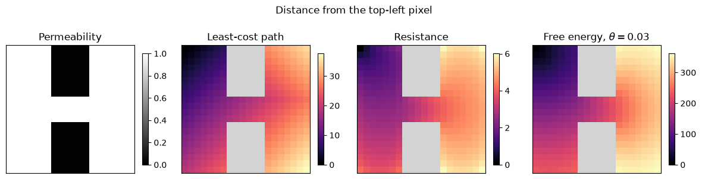
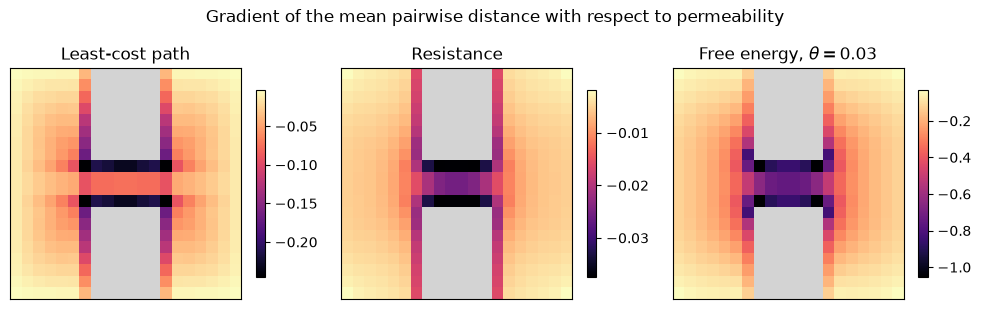

Distance calculation¤
This example computes distances on a graph with JAXScape and differentiates them.
The graph has one vertex per pixel of a raster, and its edge weights derive
from the raster values. JAXScape implements the least-cost path distance
(LCPDistance), the resistance distance (ResistanceDistance),
and the free-energy distance (FreeEnergyDistance), a family of
distances between the two, indexed by an inverse temperature \(\theta\). All three are differentiable with respect to the edge weights,
and so with respect to the raster. EuclideanDistance returns the
straight-line distance between pixel centres, which does not depend on the edge
weights.
The example needs JAXScape and Matplotlib:
uv add jaxscape matplotlib
# Download the example raster.
import os
import urllib.request
import zipfile
if not os.path.exists("../data"):
urllib.request.urlretrieve(
"https://github.com/vboussange/jaxscape/releases/download/v0.0.6/data.zip",
"../data.zip",
)
with zipfile.ZipFile("../data.zip") as z:
z.extractall("..")
os.remove("../data.zip")
import math
import equinox as eqx
import jax
import jax.numpy as jnp
import matplotlib.pyplot as plt
import numpy as np
from jaxscape import (
FreeEnergyDistance,
GridGraph,
LCPDistance,
ResistanceDistance,
SpielmanApproximation,
)
from jaxscape.solvers import GeometricMultigridCGSolver
Graph from a raster¤
A GridGraph has one vertex per pixel, and an edge between each pixel
and each of its four horizontal and vertical neighbours (ROOK_CONTIGUITY, the
default; QUEEN_CONTIGUITY adds the four diagonal neighbours). The weight of
the edge from pixel \(i\) to pixel \(j\) is fun(x_i, x_j), where \(x\) is the
raster. JAXScape reads edge weights as conductances \(a_{ij}\); LCPDistance and
FreeEnergyDistance assign each edge the cost \(c_{ij} = 1/a_{ij}\).
The raster is a 20 × 20 map of permeability, the ease of movement through a pixel, as used in movement ecology: 1 in the open area and 0 in two barriers. Adding 0.01 keeps the graph connected. An edge of zero conductance is absent: with a permeability of 0, the pixels inside the barriers would have no edges, and the resistance and free-energy distances require a connected graph.
permeability = jnp.asarray(np.loadtxt("../data/permeability.csv", delimiter=","))
permeability = permeability + 0.01
barriers = np.asarray(permeability < 0.1)
grid = GridGraph(permeability, fun=lambda x, y: (x + y) / 2)
print(f"{grid.nv} vertices")
400 vertices
With the arithmetic mean, \(a_{ij} = a_{ji}\): the graph is undirected, as the
resistance and free-energy distances require. The default,
fun=lambda x, y: y, takes the permeability of the target pixel and gives a
directed graph.
Distances¤
A distance is an Equinox module. Called on a graph with \(n\) vertices, it returns a matrix of distances:
distance(graph): between all pairs of vertices, with shape \((n, n)\);distance(graph, sources=s): from the \(p\) verticessto every vertex, with shape \((p, n)\);distance(graph, sources=s, targets=t): from the \(p\) verticessto the \(q\) verticest, with shape \((p, q)\);distance(graph, nodes=v): between the \(p\) verticesv, with shape \((p, p)\).
Vertices are given as indices, in a 1D array, or on a GridGraph as
(row, column) coordinates, in an array of shape \((p, 2)\). The code below
computes the distances from the top-left pixel to every pixel.
Theory: definitions
Let \(A\) be the matrix of conductances \(a_{ij}\), \(D\) the diagonal matrix of weighted degrees \(D_{ii} = \sum_j a_{ij}\), and \(c_{ij} = 1/a_{ij}\) the cost of edge \((i, j)\).
Least-cost path distance. The minimum, over the paths \(\pi\) from \(i\) to \(j\), of the total edge cost:
LCPDistance computes it with the Bellman-Ford algorithm by default, or
with the Floyd-Warshall algorithm (algorithm="floyd-warshall").
Resistance distance. With the Laplacian \(L = D - A\) and its Moore-Penrose pseudo-inverse \(L^+\),
the effective resistance between \(i\) and \(j\) in the electrical network whose edges have conductances \(a_{ij}\). It depends on every path between \(i\) and \(j\). For the random walk with transition probabilities \(a_{ij}/D_{ii}\), the expected number of steps from \(i\) to \(j\) and back to \(i\) is \(R_{ij} \sum_k D_{kk}\).
Free-energy distance. Let \(P = D^{-1} A\) be the transition matrix of that random walk, \(C\) the matrix of edge costs, and \(\theta > 0\) an inverse temperature. With \(Z = (I - P \odot e^{-\theta C})^{-1}\), where the product \(\odot\) and the exponential are elementwise, and \(z^h_{ij} = Z_{ij} / Z_{jj}\),
\(Z_{ij}\) is the sum, over the walks from \(i\) to \(j\), of their probability under the random walk times \(e^{-\theta \times \text{cost}}\). As \(\theta \to \infty\), \(d_{ij}\) tends to the least-cost path distance. As \(\theta \to 0\), on a graph with \(m\) undirected edges and no self-loops, it tends to \(m R_{ij}\). See Kivimäki, Shimbo and Saerens (2014) and Françoisse et al. (2017).
Euclidean distance. The straight-line distance between pixel centres, in units of the pixel side.
source = jnp.array([[0, 0]]) # (row, column) of the top-left pixel
distances = {
"Least-cost path": LCPDistance(),
"Resistance": ResistanceDistance(),
r"Free energy, $\theta = 0.03$": FreeEnergyDistance(theta=0.03),
}
maps = {}
for name, distance in distances.items():
d = distance(grid, sources=source) # shape (1, grid.nv)
maps[name] = np.ma.masked_where(barriers, grid.node_values_to_array(d[0]))
cmap = plt.cm.magma.copy()
cmap.set_bad("lightgray") # barrier pixels
fig, axs = plt.subplots(1, 4, figsize=(12, 3.3))
im = axs[0].imshow(permeability, cmap="gray", vmin=0, vmax=1)
axs[0].set_title("Permeability")
fig.colorbar(im, ax=axs[0], shrink=0.7)
for ax, (name, values) in zip(axs[1:], maps.items()):
im = ax.imshow(values, cmap=cmap)
ax.set_title(name)
fig.colorbar(im, ax=ax, shrink=0.7)
for ax in axs:
ax.set_xticks([])
ax.set_yticks([])
fig.suptitle("Distance from the top-left pixel")
fig.tight_layout()
fig.savefig("distances.png", dpi=300, transparent=True, bbox_inches="tight")
plt.show()

Resistance distance¤
Computing resistance distances requires solving linear systems in the graph
Laplacian: the exact distances from one source to all \(n\) vertices require
solutions for \(n + 1\) right-hand sides. Two attributes of ResistanceDistance
set the cost and accuracy of the computation: solver, which solves the linear
systems, and method, which selects exact distances or a randomized
approximation.
Theory: exact resistance distances
For a connected graph, \(L\) is singular: \(L \mathbf{1} = 0\). JAXScape grounds it at a vertex \(g\) of high weighted degree, near the centre pixel of a grid graph: \(L_g = L + D_{gg} e_g e_g^\top\) is symmetric positive definite. Let \(S\) be the inverse of \(L\) with the row and column of \(g\) removed, padded with zeros in that row and column; the solutions of \(L_g x = e_i\) minus their value at \(g\) are the columns \(S e_i\). Then
The distances from source \(i\) to targets \(j\) need the column \(S e_i\), one right-hand side, and the diagonal entries \(S_{jj}\), one right-hand side per target.
Linear solvers¤
The default solver, GeometricMultigridCGSolver, applies the conjugate
gradient (CG) method, preconditioned by one geometric multigrid cycle per
iteration, to the grounded Laplacian. It runs in JAX on CPUs and GPUs, in
float32 and float64, inside jax.jit. It applies to grid graphs, such as those
of a GridGraph; with other graphs, the default solver raises an error. The
alternatives:
solver=None: dense linear algebra, the pseudo-inverse of \(L\) for all-pairs andnodesqueries and a dense Cholesky factorization of \(L_g\) for the others. Memory grows with \(n^2\), so it suits small graphs only.- Sparse direct solvers,
CholmodSolveron CPUs andCuDSSSolveron NVIDIA GPUs: every right-hand side is solved with one sparse factorization of \(L_g\). They suit graphs other than grids and, on CPUs, queries with many right-hand sides, such as all pairs or one source to every vertex, when the factorization fits in memory. - CG preconditioned by algebraic multigrid,
AMJaxCGSolver, when the factorization does not fit in memory. - Any Lineax solver that accepts a sparse
symmetric positive definite operator, such as
lineax.CG.
The solver for each device, query and graph size, and the optional dependency
of each, are in Linear solvers. CG
stops when the norm of its residual, relative to that of the right-hand side,
falls below rtol (\(10^{-5}\) by default). The code below compares the default
solver with dense linear algebra.
multigrid = ResistanceDistance(solver=GeometricMultigridCGSolver(rtol=1e-5)) # default
dense = ResistanceDistance(solver=None)
r_multigrid = multigrid(grid, sources=source)[0]
r_dense = dense(grid, sources=source)[0]
targets = r_dense > 0 # every vertex but the source
difference = jnp.abs(r_multigrid - r_dense)[targets] / r_dense[targets]
print(f"Largest relative difference: {jnp.max(difference):.1e}")
Largest relative difference: 1.9e-05
The coarsest grid of the multigrid hierarchy has at most 1024 pixels, and
GeometricMultigridCGSolver solves it with a Cholesky factorization. This grid of
400 pixels is its own coarsest grid: both solvers factorize the grounded
Laplacian, and their distances differ by float32 rounding error.
Exact and approximate methods¤
ResistanceDistance() computes exact resistance distances by default, with
the method ExactResistance. For larger graphs, the
Spielman-Srivastava randomized approximation, SpielmanApproximation,
is selected with an explicit method object:
ResistanceDistance(method=SpielmanApproximation(epsilon=0.05, seed=0)). The
epsilon parameter belongs to SpielmanApproximation: smaller values mean more
random projections, \(k = \lceil \ln n / \epsilon^2 \rceil\), and typically a
better accuracy at a higher cost in memory and in linear solves. All-pairs and
sources-to-targets queries require solutions for \(k\) right-hand sides,
whatever the number of sources and targets. The approximate method remains
compatible with jax.grad via a custom implicit-differentiation rule: the
backward pass solves the adjoint linear systems with the same solver.
Theory: Spielman-Srivastava approximation
Let \(B\) be the oriented incidence matrix of the graph, with one row per edge, and \(W\) the diagonal matrix of the edge conductances, so that \(L = B^\top W B\). Then
the squared Euclidean distance between columns \(i\) and \(j\) of \(W^{1/2} B L^+\). These distances are approximately preserved by a random \(k \times m\) matrix \(Q\), for \(m\) edges, with independent entries \(\pm 1/\sqrt{k}\) (Johnson-Lindenstrauss lemma). The \(k \times n\) embedding \(Z = Q W^{1/2} B L^+\) requires the solution of one Laplacian system per row of \(Q\), and
is an estimate of \(R_{ij}\) for every pair of vertices.
Spielman and Srivastava (2011) show that, with
\(k = O(\log n / \epsilon^2)\) projections,
\((1 - \epsilon) R_{ij} \le \tilde R_{ij} \le (1 + \epsilon) R_{ij}\)
for all pairs with high probability. SpielmanApproximation takes
\(k = \lceil \ln n / \epsilon^2 \rceil\), with constant 1, so that \(\epsilon\)
is only a rough measure of the accuracy. Each estimate is unbiased, with
variance at most \(2 R_{ij}^2 / k\).
The code below compares the approximation with the exact distances from the top-left pixel.
exact = ResistanceDistance()(grid, sources=source)[0]
targets = exact > 0 # every vertex but the source
print(f"Exact: {grid.nv + 1} right-hand sides")
for epsilon in (0.2, 0.1, 0.05):
method = SpielmanApproximation(epsilon=epsilon, seed=0)
approximate = ResistanceDistance(method=method)(grid, sources=source)[0]
error = jnp.abs(approximate - exact)[targets] / exact[targets]
k = math.ceil(math.log(grid.nv) / epsilon**2)
print(
f"epsilon = {epsilon:<4}: {k:>4} right-hand sides, relative error "
f"{jnp.median(error):.1%} (median), {jnp.max(error):.1%} (largest)"
)
Exact: 401 right-hand sides
epsilon = 0.2 : 150 right-hand sides, relative error 14.6% (median), 40.4% (largest)
epsilon = 0.1 : 600 right-hand sides, relative error 3.4% (median), 15.5% (largest)
epsilon = 0.05: 2397 right-hand sides, relative error 1.3% (median), 7.4% (largest)
On this graph of 400 vertices, the exact distances from one source require fewer right-hand sides than the approximation for \(\epsilon \le 0.1\). On a raster of \(10^6\) pixels, \(\epsilon = 0.1\) requires \(k = 1382\) right-hand sides, against \(10^6 + 1\) for the exact distances from one source.
Free-energy distance¤
Computing free-energy distances also requires solving linear systems. By
default (solver=None), FreeEnergyDistance solves them with dense linear
algebra, which suits small graphs; the solvers for larger graphs are in
Linear solvers. Entries of \(Z\) decay
exponentially with path cost. FreeEnergyDistance checks that each queried
entry is resolved and raises an error otherwise. In float64
(jax.config.update("jax_enable_x64", True)), larger distances and larger
values of \(\theta\) are resolved than in float32, the default of JAX.
Differentiating distances¤
jax.grad differentiates each distance above with respect to the
conductances and, through fun, with respect to the raster. The code below
differentiates the mean pairwise distance
with respect to the permeability of each pixel. The graph is
built inside the differentiated function, so that the gradient is taken through
GridGraph.
@eqx.filter_jit
def mean_distance(permeability, distance):
grid = GridGraph(permeability, fun=lambda x, y: (x + y) / 2)
return distance(grid).mean()
gradients = {
name: jax.grad(mean_distance)(permeability, distance)
for name, distance in distances.items()
}
fig, axs = plt.subplots(1, 3, figsize=(10, 3.3))
for ax, (name, gradient) in zip(axs, gradients.items()):
im = ax.imshow(np.ma.masked_where(barriers, gradient), cmap=cmap)
ax.set_title(name)
ax.set_xticks([])
ax.set_yticks([])
fig.colorbar(im, ax=ax, shrink=0.7)
fig.suptitle("Gradient of the mean pairwise distance with respect to permeability")
fig.tight_layout()
plt.show()

Pixels with negative entries are those where an increase in permeability decreases the mean pairwise distance. The least-cost path distance depends on the edges of least-cost paths alone: for a unique least-cost path, the derivative of its distance with respect to the conductance \(a\) of an edge is \(-1/a^2\) on that path and zero elsewhere. The resistance and free-energy distances depend on all paths between two vertices. In the three maps, the gradient is largest in magnitude in the gap between the two barriers, most of all along the barriers: movement between the left and right halves of the landscape passes through the gap. For a species that moves through this landscape, the gap is a pinch point, where a loss of permeability, such as a new road, lengthens the most distances. Barrier pixels are grey.